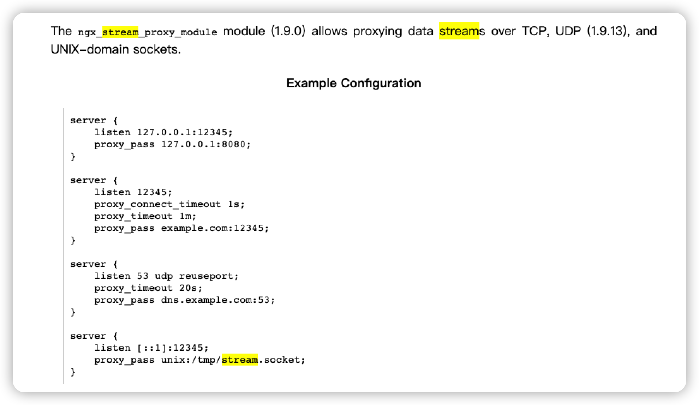

纸上得来终觉浅，绝知此事要躬行。

# 获取帮助信息
$ nginx -h
nginx version: nginx/1.18.0 (Ubuntu)
Usage: nginx [-?hvVtTq] [-s signal] [-c filename] [-p prefix] [-g directives]
Options:
-?,-h : this help
-v : show version and exit
-V : show version and configure options then exit
-t : test configuration and exit
-T : test configuration, dump it and exit
-q : suppress non-error messages during configuration testing
-s signal : send signal to a master process: stop, quit, reopen, reload
-p prefix : set prefix path (default: /usr/share/nginx/)
-c filename : set configuration file (default: /etc/nginx/nginx.conf)
-g directives : set global directives out of configuration file
# 值得一说的就是 -s(发送信号)/-g(从配置文件中设置全局指令) 参数
stop: 快速停止nginx服务
quit: 完整有序的停止nginx服务
reopen: 重新打开日志文件(日志文件mv等操作后会重新生成)
reload: 修改配置后重新加载生效
# 简述reload命令的执行步骤
1. master进程检查配置文件的正确性，若错误则返回错误信息并终止(采用原配置文件继续工作；因为worker并未受到影响)，若正常则继续后续步骤。
2. 用新的配置文件，启动新的worker进程。
3. nginx将新的请求，分配新的worker进程。
4. 等待以前的worker进程的全部请求已经都返回后，关闭相关worker进程。
5. 重复上面过程，知道全部旧的worker进程都被关闭掉。
1. 缓解 DDoS 的攻击
分布式拒绝服务(DDoS)攻击是一种试图使服务(通常是网站服务)无法正常使用，通过多台机器同时对目标产生大量流量从而使其服务器因为资源耗尽而无法正常提供服务。通常，攻击者试图同目标系统建立大量连接和发送大量连接请求，使其无法在接受新的连接或者响应速度变的非常缓慢严重影响使用。

1.1 攻击特征
这里说明的是，应用层(
DDos)的攻击特征
应用层(通常为第7层的HTTP服务)的DDoS攻击是由软件程序发动的，并且可以根据具体的系统漏洞发动最佳的攻击。例如，对于无法处理大量并发连接的系统，只需要建立大量的连接并定期发送少量流量保持连接的存活，这样就可以耗尽系统的资源。其他的攻击都可以通过发送大量或超大量的请求来完成。因为发动这些攻击不是真实用户而是机器人，所以攻击者可以很轻松的产生大量的连接并非常快速的发送连接请求。
- 流量通常来源于一组用于攻击的
IP地址，其结果就是每一个IP地址都请求建立大量远超正常用户的需求连接。 - 因为流量是由机器人产生的，且其目标就是让服务器瘫痪，所以产生流量的速度远超正常用户可能产生的速度。
- 通常头部
User-Agent字段通常为非标准值。 - 通常头部
Referer字段有时会设置为与攻击相关的值。
了解DDoS攻击的特征(不意味这是一份完整的特征列表)可以帮助缓解受到危害。但是这里非常注意的是，不要认为这种流量模式就一定代表是DDoS攻击。使用代理转发也可能产生这种流量，因为代理会为其用户产生大量真实的连接请求。然而，来自代理的连接请求数通常也比来自DDoS攻击的少很多。
1.2 识别攻击
企业收费版，已经做了很多相关的服务了！
到目前为止，我们主要关注了如何配置NGINX和NGINX Plus缓解DDoS攻击带来的影响。但是如何使用NGINX和NGINX Plus帮助发现DDoS攻击呢？NGINX Plus 状态模块提供了详细的指标描述了当前链路的负载均衡状况，可以使用这个模块帮助发现不寻常的流量模式。NGINX Plus也提供了一个展示状态仪表盘的网页，可以实时的描述当前NGINX Plus系统的运行状态(演示地址：demo.nginx.com)。同样的指标也可以通过API进行读取，使用自定义的或第三方监控系统都可以获取到这些指标，之后可以自己根据数据分析历史趋势并发现异常流量进行报警。
NGINX和NGINX Plus可以作为缓解DDoS攻击方案的重要组成部分，其中NGINX Plus提供了更多的功能帮助识别并抵御DDoS攻击。
1.3 缓解对策
通过调节传入流量和控制来自代理或后端服务器的流量来处理
NGINX和NGINX Plus含有一些功能，对照上述DDoS攻击特征，可以缓解DDoS攻击。这些功能通过调节传入流量和控制来自代理或后端服务器的流量来处理DDoS攻击。
- [1] 限制请求的速率
可以通过NGINX和NGINX Plus设置将来自真实用户的请求速率限制在一个正常值内。例如，你可能认为一个真实用户进入登录页面至少会每两秒产生一次请求。这样你就可以设置NGINX和NGINX Plus要求一个客户端的IP每隔两秒才能产生一次登录请求(相当于每分钟30次)。
# 本例中为客户端IP地址为$binary_remote_addr变量
# limit_req_zone指令配置一个共享内存区域称为one且大小为10m，用于存储请求指定项的状态
# limit_req指令指定location为/login.html的页面使用这块共享内存区域
limit_req_zone $binary_remote_addr zone=one:10m rate=30r/m;
server {
...
location /login.html {
limit_req zone=one;
...
}
}
- [2] 限制请求的连接数
可以限制来自单独客户端IP的连接数为一个正常用户适用的值。例如，允许每个客户端IP跟网站的/store区域同时最多建立10个连接。
# 本例中为客户端IP地址为$binary_remote_addr变量
# limit_conn_zone指令配置一个共享内存区域称为addr且大小为10m，用于存储请求指定项的状态
# limit_conn指令指定location为/store的页面使用这块共享内存区域，并且限制每个客户端IP的最大连接数为10个
limit_conn_zone $binary_remote_addr zone=addr:10m;
server {
...
location /store/ {
limit_conn addr 10;
...
}
}
- [3] 关闭慢速连接
可以关闭那些请求数据非常稀少的连接，这些连接通常试图保持尽可能长的时间以消耗服务器资源。Slowloris攻击就是这种类型。client_body_timeout指令控制NGINX在两次用户体写之间等待多长时间，client_header_timeout指令控制NGINX在两次用户头部写之间等待多长时间。这两个指令默认值均为60秒。下面为示例配置NGINX在两次用户体或头部写之间最多等待 5 秒。
server {
client_body_timeout 5s;
client_header_timeout 5s;
...
}
- [4] 设置 IP 地址黑名单
如果你可以识别出用于攻击的IP地址，就可以使用deny指令将其加入黑名单中，这样NGINX和NGINX Plus会拒绝来着这个IP的任何连接或请求。例如，如果你确定攻击来自地址123.123.123.1~123.123.123.16。
location / {
deny 123.123.123.0/28;
...
}
又或者你确定攻击来自地址123.123.123.3、123.123.123.5和123.123.123.7。
location / {
deny 123.123.123.3;
deny 123.123.123.5;
deny 123.123.123.7;
...
}
- [5] IP 地址白名单
如果网站或应用只允许来自指定IP地址的连接，则可以同时使用allow和deny指令来设置只允许指定IP访问网站或应用。例如，限制只允许来自本地网络的连接。这里的 deny all指令禁止所有来自allow指定范围之外IP的连接。
location / {
allow 192.168.1.0/24;
deny all;
...
}
- [6] 使用缓存来平滑流量峰值
可以配置NGINX和NGINX Plus使其承受更多来自攻击产生的流量峰值，通过启用缓存并配置相关参数使其暂存后续的请求。下面是一些有用的配置：
proxy_cache_use_stale指令的 updating 参数告诉 NGINX 当它需要获取一个过期缓存对象的更新时，它应当发送一个更新请求，并在此期间使用更新前的对象继续服务于请求的用户。如果攻击就是在不停的重复请求某个文件，这样可以大大减小对后端服务器的请求数量。proxy_cache_key指令定义的内置变量(默认关键字有三个，$scheme$proxy_host$request_uri)。如果包含$query_string变量，那么攻击者可以发送大量随机的请求字符串从而导致缓存更新过渡频繁。不建议在关键字中包含$query_string变量除非你有什么特别的理由。
proxy_cache_use_stale
proxy_cache_key
- [7] 设置阻塞请求
# 可以配置NGINX和NGINX Plus阻塞多种请求
1. 极具指向性针对指定URL的请求
2. 请求头部中的User-Agent字段为非正常值
3. 请求头部中的Referer字段为与攻击相关的值
4. 请求头部中其他字段含有与攻击相关的值
例如，如果确定DDoS攻击的目标URL为/foo.php，则可以设置阻塞所有对于该页面的请求。或者发现来自DDoS攻击的请求头部User-Agent字段值为foo或bar，则可以设置阻塞这些请求。
location / {
if ($http_user_agent ~* foo|bar) {
return 403;
}
...
}
- [8] 限制后端服务器的连接
NGINX和NGINX Plus由于负载均衡，所以经常同时处理比后端服务器更大量的连接。对于NGINX Plus可以限制每个后端服务器的连接数。例如，如果希望NGINX Plus限制每个网站upstream组内后端服务器最多建立200个连接。
# max_conns参数为每个服务器指定最大连接数
# queue指令设置当upstream组内后端服务器达到了最大连接数时请求队列的长度
# timeout参数设置请求队列中每项的保留时间
upstream website {
server 192.168.100.1:80 max_conns=200;
server 192.168.100.2:80 max_conns=200;
queue 10 timeout=30s;
}
- [9] 处理基于 Range 字段的攻击
攻击的另一种方法就是通过发送一个头部中Range字段具有非常大的数值，从而导致服务器的溢出。具体关于如何配置 NGINX和NGINX Plus缓解这种攻击可以参见一个案例，如何配置NGINX和NGINX Plus抵御CVE-2015-1635。
- [10] 处理高负荷
DDoS攻击通常都会导致高负荷。关于如何调整NGINX和NGINX Plus以及操作系统处理高负荷可以参见调整NGINX性能。
2. 日志文件的切割
日志转存主要是分为，手动脚本处理和借助第三方工具配置处理！
随着Nginx服务的服务时间越来越长，其日志大小也就越来越大，所有有必要对其进行自动化的切割，以便于之后按天统计访问量神马的功能做准备。

2.1 脚本切割
手动脚本处理：可以通过
crontab定时执行实现日志切割功能
#!/bin/sh
# set file path
NGINX_ACCESS_LOG=/opt/logs/nginx/access/log.pipe
NGINX_ERROR_LOG=/opt/logs/nginx/error/log
NGINX_STATIS_LOG=/opt/logs/nginx/statis/log
# rename log
mv $NGINX_ACCESS_LOG $NGINX_ACCESS_LOG.`date -d yesterday +%Y%m%d`
mv $NGINX_ERROR_LOG $NGINX_ERROR_LOG.`date -d yesterday +%Y%m%d`
mv $NGINX_STATIS_LOG $NGINX_STATIS_LOG.`date -d yesterday +%Y%m%d`
touch $NGINX_ACCESS_LOG
touch $NGINX_STATIS_LOG
touch $NGINX_ERROR_LOG
# restart nginx(都可以)
/etc/init.d/nginx reload
/etc/init.d/nginx reopen
2.2 服务支持
借助第三方工具配置处理：只要安装
logrotate软件即可实现功能
logrotate 介绍
logrotate是linux系统日志的管理工具，可以对单个文件或目录下的文件按时间/大小进行切割logrotate服务程序支持压缩存储、指定日志备份数量、还可以在切割之前后运行自定义命令等logrotate是基于crontab定时任务运行，具体时间点可以查询crontab的配置文件/etc/anacrontab
logrotate 服务
logrotate的默认配置文件是/etc/logrotate.conflogrotate后面跟配置文件就可以直接执行，如/usr/sbin/logrotate -f /etc/logrotate.d/nginx
logrotate 命令服务
-f：强制执行-v：显示指令执行过程-s <状态文件>：使用指定的状态文件-d：详细显示指令执行过程，便于排错或了解程序执行的情况
logrotate 配置参数
| 参数名称 | 功能解释说明 |
|---|---|
daily |
指定转储周期为每天 |
weekly |
指定转储周期为每周 |
monthly |
指定转储周期为每月 |
yearly |
指定转储周期为每年 |
dateext |
在文件末尾添加当前日期 |
compress |
转储通过gzip压缩以后的日志 |
nocompress |
不需要通过gzip压缩日志 |
missingok |
在日志轮循期间，任何错误将被忽略，例如“文件无法找到”之类的错误 |
copytruncate |
先把日志内容复制到旧日志文件后才清除日志文件内容，可以保证日志记录的连续性 |
nocopytruncate |
备份日志文件但是不截断 |
create mode owner group |
以指定的权限创建全新的日志文件，同时logrotate也会重命名原始日志文件 |
nocreate |
不建立新的日志文件 |
delaycompress |
总是和compress一起使用时，转储的日志文件到下一次转储时才压缩 |
nodelaycompress |
覆盖delaycompress选项，转储同时压缩 |
errors address |
专储时的错误信息发送到指定的Email地址 |
ifempty |
即使是空文件也转储，这个是 logrotate 的缺省选项 |
notifempty |
如果是空文件的话，不转储 |
mail address |
把转储的日志文件发送到指定的E-mail地址 |
nomail |
转储时不发送日志文件 |
olddir directory |
转储后的日志文件放入指定的目录，必须和当前日志文件在同一个文件系统 |
noolddir |
转储后的日志文件和当前日志文件放在同一个目录下 |
rotate count |
指定日志文件删除之前转储的次数，0指没有备份，5指保留5个备份 |
tabootext [+] list让logrotate |
不转储指定扩展名的文件，缺省的扩展名是：.rpm-orig、.rpmsave等 |
size size |
当日志文件到达指定的大小时才转储，Size可以指定bytes(缺省)以及KB或者MB |
sharedscripts |
表示postrotate脚本在压缩了日志之后只执行一次 |
prerotate/endscript |
在转储以前需要执行的命令可以放入这个对，这两个关键字必须单独成行 |
postrotate/endscript |
在转储以后需要执行的命令可以放入这个对，这两个关键字必须单独成行 |
# 安装服务之后，需要生成logrotate脚本文件
$ sudo yum install logrotate
$ sudo apt install logrotate
# 自己有的配置文件目录(默认15天)
# 也可以对单个文件进行单独处理，也可以使用这样的通配符
$ vim /etc/logrotate.d/nginx
/var/log/nginx/*.log {
daily
missingok
rotate 14
compress
delaycompress
notifempty
create 0640 www-data adm
sharedscripts
prerotate
if [ -d /etc/logrotate.d/httpd-prerotate ]; then \
run-parts /etc/logrotate.d/httpd-prerotate; \
fi \
endscript
postrotate
invoke-rc.d nginx rotate >/dev/null 2>&1
endscript
}
- 问题解决
# 1.如何测试logrotate程序执行的情况？
/usr/sbin/logrotate -d /etc/logrotate.d/nginx
# 2.怎么查看log文件的具体执行情况？
cat /var/lib/logrotate/status
# 3.使用-v或-d参数时，显示log does not need rotating问题？
logrotate在对status未记录的文件进行转储时，会在status添加一条该文件的记录，并将操作时间设为当天。
之后程序再次对此文件进行转储时发现这个文件今天已经操作过，就不再进行相关操作。
# 解决方法
1. 编辑/var/lib/logrotate/status文件更改相对应的文件操作日期
2. 使用-s指定状态文件
# 4.分割日志时报错没有权限
error: skipping "/var/log/nginx/test.access.log" because parent directory has insecure
permissions (It is world writable or writable by group which is not "root") Set "su"
directive in config file to tell logrotate which user/group should be used for rotation.
# 添加“su root list”文件中即可
$ sudo vim /etc/logrotate.d/nginx
/var/log/nginx/*.log {
su root list
daily
missingok
rotate 52
compress
delaycompress
notifempty
create 0640 www-data adm
sharedscripts
postrotate
[ ! -f /var/run/nginx.pid ] || kill -USR1 `cat /var/run/nginx.pid`
endscript
}
3. 获取用户真实 IP 地址
获取用户真实 IP 地址，可以应对工具、进行溯源等诸多好处！
如果你的 Web 服务器前端有代理服务器或 CDN 时，在日志中的 $remote_addr 可能就不是客户端的真实 IP 了。比较常用的解决方法有以下三几种，这里我们将主要介绍如何使用 Nginx 自带 realip 模块来解决这一问题。可以参考，我之前写的一篇 Nginx 服务变量传递。
- 使用
CDN自定义IP头来获取 - 通过
HTTP_X_FORWARDED_FOR获取IP地址 - 使用
Nginx自带模块realip获取用户IP地址
3.1 模块介绍
介绍 ngx_realip 模块的用途！
ngx_realip 模块究竟有什么实际用途呢？为什么我们需要去改写请求的来源地址呢？答案就是，当 Nginx 处理的请求经过了某个 HTTP 代理服务器的转发时，这个模块就变得特别有用。
当原始的用户请求经过转发之后，Nginx 接收到的请求的来源地址无一例外地变成了该代理服务器的 IP 地址，于是 Nginx 以及 Nginx 背后的应用就无法知道原始请求的真实来源。
所以，一般我们会在 Nginx 之前的代理服务器中把请求的原始来源地址编码进某个特殊的 HTTP 请求头中，然后再在 Nginx 中把这个请求头中编码的地址恢复出来。这样 Nginx 中的后续处理阶段(包括 Nginx 背后的各种后端应用)就会认为这些请求直接来自那些原始的地址，代理服务器就仿佛不存在一样。ngx_realip 模块正是用来处理这个需求的。
3.2 安装配置
最好是直接参考官方安装文档，比这里的更新！
realip 是 Nginx 内置模块，需要在编译 Nginx 时加上 --with-http_realip_module 参数来启用它。
- 常用的编译参数：
$ ./configure
--prefix=/etc/nginx
--sbin-path=/usr/sbin/nginx
--conf-path=/etc/nginx/nginx.conf
--error-log-path=/var/log/nginx/error.log
--http-log-path=/var/log/nginx/access.log
--pid-path=/var/run/nginx.pid
--lock-path=/var/run/nginx.lock
--http-client-body-temp-path=/var/cache/nginx/client_temp
--http-proxy-temp-path=/var/cache/nginx/proxy_temp
--http-fastcgi-temp-path=/var/cache/nginx/fastcgi_temp
--http-uwsgi-temp-path=/var/cache/nginx/uwsgi_temp
--http-scgi-temp-path=/var/cache/nginx/scgi_temp
--user=nginx --group=nginx
--with-http_ssl_module
--with-http_realip_module
--with-http_addition_module
--with-http_sub_module
--with-http_dav_module
--with-http_flv_module
--with-http_mp4_module
--with-http_gunzip_module
--with-http_gzip_static_module
--with-http_random_index_module
--with-http_secure_link_module
--with-http_stub_status_module
--with-http_auth_request_module
--with-threads
--with-stream
--with-stream_ssl_module
--with-mail
--with-mail_ssl_module
--with-file-aio
--with-ipv6
--with-http_spdy_module
--with-cc-opt='-O2 -g'
$ make
$ make install
- 配置语法
# 真实服务器上一级代理的IP地址或者IP段，可以写多行
set_real_ip_from 192.168.1.0/24;
set_real_ip_from 192.168.2.1;
# 从哪个header头检索出要的IP地址
real_ip_header X-Forwarded-For;
# 递归的去除所配置中的可信IP地址
real_ip_recursive on;
- 配置实例
server {
listen 80;
server_name www.wseacape.site;
access_log /var/log/nginx/www.wseacape.site.access.log main;
index index.php index.html index.html;
root /var/www/www.wseacape.site;
location /
{
root /var/www/www.wseacape.site;
set_real_ip_from 192.168.2.0/24;
set_real_ip_from 128.22.189.11;
real_ip_header X-Forwarded-For;
real_ip_recursive on;
}
}
- 这里详细讲下
real_ip_recursive的用途：递归的去除所配置中的可信IP，排除set_real_ip_from里面出现的IP。如果出现了未出现这些IP段的IP，那么这个IP将被认为是用户的IP地址。以上配置为例，服务器获取到以下的IP地址：
128.22.189.11
192.168.2.100
222.11.158.67
- 在
real_ip_recursive on的情况下，128.22.189.11、192.168.2.100都出现在set_real_ip_from中,仅仅222.11.158.67没出现,那么这个IP就被认为是用户的IP地址，并且赋值到remote_addr变量。在real_ip_recursive off或者不设置的情况下，192.168.2.100出现在了set_real_ip_from中会被排除掉，其它的IP地址便认为是用户的IP地址。
4. 配置服务高可用负载
服务 5 求之后，客户端响应超时，并非必现场景！
- [问题起因] 之前为了能够做到服务的高可用或者主备，需要使用
KeepAlive的服务进行后端服务的心跳健康检查，或者使用Nginx·Plus企业版本，配置起来还是非常麻烦的。
Syntax: proxy_next_upstream error | timeout | invalid_header | http_500 | http_502 | http_503 | http_504 | http_403 | http_404 | http_429 | non_idempotent | off ...;
Default: proxy_next_upstream error timeout;
Context: http, server, location
- [解决方法] 现在已经可以借助 proxy_next_upstream 来配置高可用服务。
- upstream
- 在
fail_timeout设定的时间内，某个server的请求失败次数达到max_fails之后，upstream会认为该节点处于down状态，会从upstream中去除该节点。如果在fail_timeout时间内服务已经恢复了，会重新加回upstream中。
- 在
- proxy_next_upstream_xxx
proxy_next_upstream_tries定义原始请求和重试请求的最大次数，此处表示 原始请求 1 次+重试 1 次，而proxy_next_upstream_timeout指重试请求所花的总时间，超过该定义后就不重试，所以需要结合upstream_tries定义合理值以免不断重试，默认0表示关闭该限制。- 此处特别注意
proxy_next_upstream默认对于非幂等性方法不进行重试机制，需要设置non_idempotent参数才可以。但注意生产环境开启该参数带来的风险，例如前一个节点的post请求处理超时，导致next_upstream，就会出现重复post的情况。
- upstream
upstream pdf_service {
server 192.168.0.101:8000 max_fails=1 fail_timeout=10s;
server 192.168.0.104:8000 max_fails=1 fail_timeout=10s;
}
server {
listen 80;
server_name localhost;
access_log /var/log/nginx/access.log main;
client_max_body_size 500m;
keepalive_timeout 65;
proxy_connect_timeout 60; # nginx与后端服务器建立连接超时时间
proxy_read_timeout 600; # nginx从后端服务器读取响应超时时间
proxy_send_timeout 600; # nginx往后端服务器发送请求的超时时间
location /pdf {
proxy_http_version 1.1;
proxy_pass_header Server;
proxy_set_header Host $http_host;
proxy_next_upstream error timeout http_502 http_504 non_idempotent;
proxy_next_upstream_tries 2; # 该值定义原始请求和重试请求的最大次数
proxy_next_upstream_timeout 0s; # 指重试请求所花的总时间超过该定义后就不重试
proxy_pass http://pdf_service;
}
}
5. 了解浏览器的缓存机制
缓存位置、缓存过程分析、缓存类型、缓存机制、缓存策略 - 深入理解浏览器的缓存机制
浏览器缓存(Browser Caching)是为了节约网络的资源加速浏览，浏览器在用户磁盘上对最近请求过的文档进行存储，当访问者再次请求这个页面时，浏览器就可以从本地磁盘显示文档，这样就可以加速页面的阅览。

从缓存位置上来说分为四种，并且各自有优先级，当依次查找缓存且都没有命中的时候，才会去请求网络。
- [1] 缓存位置
Service WorkerMemory Cache内存缓存Disk Cache磁盘缓存Push Cache
Service Worker 是运行在浏览器背后的独立线程，一般可以用来实现缓存功能。使用 Service Worker 的话，传输协议必须为 HTTPS。因为 Service Worker 中涉及到请求拦截，所以必须使用 HTTPS 协议来保障安全。
Memory Cache 也就是内存中的缓存，主要包含的是当前页面中已经抓取到的资源，例如页面上已经下载的样式、脚本、图片等。读取内存中的数据肯定比磁盘快，内存缓存虽然读取高效，可是缓存持续性很短，会随着进程的释放而释放（一旦我们关闭 Tab 页面，内存中的缓存也就被释放了）。
Disk Cache 也就是存储在硬盘中的缓存，读取速度虽然慢点，但是什么都能存储到磁盘中，与 Memory Cache 相比，优势是容量和存储时效性。它会根据 HTTP Header 中的字段判断哪些资源缓存，哪些资源可以不请求直接使用，哪些资源已经过期需要重新请求。并且即使在跨站点的情况下，相同地址的资源一旦被硬盘缓存下来，就不会再次去请求数据。
Push Cache(推送缓存)是 HTTP/2 中的内容，当以上三种缓存都没有命中时，它才会被使用。它只在会话(Session)中存在，一旦会话结束就被释放，并且缓存时间也很短暂。如果以上四种缓存都没有命中的话，那么只能发起请求来获取资源了。
强缓存判断是否缓存的依据来自于是否超出某个时间或者某个时间段，而不关心服务器端文件是否已经更新，这可能会导致加载文件不是服务器端最新的内容，那我们如何获知服务器端内容是否已经发生了更新呢？此时我们需要用到协商缓存策略。
- [2] 缓存过程分析
- 强缓存
from disk cache/from memory cache- 不会向服务器发起请求，直接从缓存中读取资源，在
Network中可以看到该请求返回200的状态码 - 强缓存可以通过设置两种
HTTP Header实现：Expires和Cache-Control
- 协商缓存
- 协商缓存就是强制缓存失效后，浏览器携带缓存标识向服务器发起请求
- 由服务器根据缓存标识决定是否使用缓存的过程，主要有两种情况(缓存生效
304/缓存成功200) - 协商缓存可以通过设置两种
HTTP Header实现：Last-Modified和ETag
- 强制缓存优先于协商缓存进行，若强制缓存生效则直接使用缓存，若不生效则进行协商缓存
- 强缓存
浏览器与服务器通信的方式为应答模式，浏览器每次发起请求都会先在浏览器缓存中查找该请求的结果以及缓存标识，浏览器每次拿到返回的请求结果都会将该结果和缓存标识存入浏览器缓存中。
- 强缓存

- 协商缓存 - 协商缓存成功，返回 200 和请求结果

- 协商缓存 - 协商缓存生效，返回 304 和 Not Modified

- 缓存机制

- [3] 建议 Nginx 的缓存添加策略
map $sent_http_content_type $cache_control_type {
default "private";
~text/html "no-store, no-transform";
}
add_header Cache-Control $cache_control_type;
- [4] 头信息字段补充信息
Expires 是 Web 服务器响应消息头字段，在响应 http 请求时告诉浏览器在过期时间前浏览器可以直接从浏览器缓存取数据，而无需再次请求。且其是 HTTP/1.0 的产物，受限于本地时间，如果修改了本地时间，可能会造成缓存失效。
- Expires
- 缓存过期时间，用来指定资源到期的时间，是服务端的具体时间点
- Expires=max-age + 请求时间，需要和
Last-modified结合使用 - 已经是过时的产物，现阶段它的存在只是一种兼容性的写法
在 HTTP/1.1 中是最重要的规则，主要用于控制网页缓存，可以在请求头或者响应头中设置，并且可以组合使用多种指令。
- Cache-Control
- public: 表明响应可以被任何对象缓存；即使是通常不可缓存的内容
- private: 表明响应只能被单个用户缓存，不能作为共享缓存(即代理服务器不能缓存它)
- no-cache: 在发布缓存副本之前，强制要求缓存把请求提交给原始服务器进行验证
- no-store: 缓存不应存储有关客户端请求或服务器响应的任何内容
- max-age: 设置缓存存储的最大周期，超过这个时间缓存被认为过期
- s-maxage: 覆盖
max-age或者Expires头，但是仅适用于共享缓存(比如各个代理) - max-stale: 表明客户端愿意接收一个已经过期的资源
- min-fresh: 表示客户端希望获取一个能在指定的秒数内保持其最新状态的响应

6. 配置 TCP/UDP 代理转发
Nginx TCP/UDP Stream -> 主流发行版都已经默认自带了
我们都知道 nginx 是一款优秀的反向代理服务，用过 nginx 的 upstream 一般都是用于 http 代理的，如果想对后端服务的 TCP 进行代理呢？这时候就需要使用到 stream 了，就可以用于代理 mysql、redis 等服务。可以参考，我之前的一篇 使用 Nginx 实现 TCP 反向代理。
- 应用 Stream 代理模块：
ngx_stream_proxy_module - 应用 Stream 上游模块：
ngx_stream_upstream_module - 应用 Stream 健康检查：
ngx_stream_upstream_hc_module

# /etc/nginx/nginx.conf
stream {
log_format proxy '$remote_addr [$time_local] '
'$protocol $status $bytes_sent $bytes_received '
'$session_time "$upstream_addr" '
'"$upstream_bytes_sent" "$upstream_bytes_received" "$upstream_connect_time"';
access_log /var/log/nginx/stream.access.log proxy;
error_log /var/log/nginx/stream.error.log error;
include /etc/nginx/stream.d/*.conf;
}
# /etc/nginx/stream.d/test1.conf
server {
listen 9999;
proxy_pass 120.120.120.120:5432;
}
# /etc/nginx/stream.d/test2.conf
upstream mysql_servers {
least_conn;
server 120.120.120.120:3306 max_fails=3 fail_timeout=5s; # 5s内出现3次错误
server 120.120.120.121:3306 max_fails=3 fail_timeout=5s;
server 120.120.120.122:3306 max_fails=3 fail_timeout=5s;
}
server {
listen 9999; # 端口
proxy_connect_timeout 5s; # 与被代理服务器建立连接的超时时间
proxy_timeout 10s; # 获取被代理服务器的响应最大超时时间
proxy_next_upstream on; # 将未返回响应的客户端连接请求传递给upstream中的下一个服务器
proxy_next_upstream_tries 3; # 转发尝试请求最多3次
proxy_next_upstream_timeout 10s; # 总尝试超时时间为10s
proxy_socket_keepalive on; # 开启SO_KEEPALIVE选项进行心跳检测
proxy_pass mysql_servers;
}
6. 日常通常会设置的配置
记录日常使用通常会设置和优化的地方
- [1] 避免记录 favicon.ico 和 robots.txt 的请求到日志里面
location = /favicon.ico {
log_not_found off;
access_log off;
}
location = /robots.txt {
allow all;
log_not_found off;
access_log off;
}
- [2] HTTP 和 HTTPS 协议相互引用
# https server with http location
server {
listen 443;
location / {
rewrite ^ http://$host$request_uri? permanent;
}
}
# http server redirects to https except one location
server {
listen 80;
location / {
rewrite ^ https://$host$request_uri? permanent;
}
}
- [3] 标识移动端设备进行重定向
location / {
# mobile site handling as per user agent
set $mobile_rewrite do_not_perform; // variable to store action. default set to not perform redirection to mobile site.
if ($http_user_agent ~* "(android|bb\d+|meego).+mobile|avantgo|bada\/|blackberry|blazer|compal|elaine|fennec|hiptop|iemobile|ip(hone|od)|iris|kindle|lge |maemo|midp|mmp|mobile.+firefox|netfront|opera m(ob|in)i|palm( os)?|phone|p(ixi|re)\/|plucker|pocket|psp|series(4|6)0|symbian|treo|up\.(browser|link)|vodafone|wap|windows ce|xda|xiino") {
set $mobile_rewrite perform;
}
if ($http_user_agent ~* "^(1207|6310|6590|3gso|4thp|50[1-6]i|770s|802s|a wa|abac|ac(er|oo|s\-)|ai(ko|rn)|al(av|ca|co)|amoi|an(ex|ny|yw)|aptu|ar(ch|go)|as(te|us)|attw|au(di|\-m|r |s )|avan|be(ck|ll|nq)|bi(lb|rd)|bl(ac|az)|br(e|v)w|bumb|bw\-(n|u)|c55\/|capi|ccwa|cdm\-|cell|chtm|cldc|cmd\-|co(mp|nd)|craw|da(it|ll|ng)|dbte|dc\-s|devi|dica|dmob|do(c|p)o|ds(12|\-d)|el(49|ai)|em(l2|ul)|er(ic|k0)|esl8|ez([4-7]0|os|wa|ze)|fetc|fly(\-|_)|g1 u|g560|gene|gf\-5|g\-mo|go(\.w|od)|gr(ad|un)|haie|hcit|hd\-(m|p|t)|hei\-|hi(pt|ta)|hp( i|ip)|hs\-c|ht(c(\-| |_|a|g|p|s|t)|tp)|hu(aw|tc)|i\-(20|go|ma)|i230|iac( |\-|\/)|ibro|idea|ig01|ikom|im1k|inno|ipaq|iris|ja(t|v)a|jbro|jemu|jigs|kddi|keji|kgt( |\/)|klon|kpt |kwc\-|kyo(c|k)|le(no|xi)|lg( g|\/(k|l|u)|50|54|\-[a-w])|libw|lynx|m1\-w|m3ga|m50\/|ma(te|ui|xo)|mc(01|21|ca)|m\-cr|me(rc|ri)|mi(o8|oa|ts)|mmef|mo(01|02|bi|de|do|t(\-| |o|v)|zz)|mt(50|p1|v )|mwbp|mywa|n10[0-2]|n20[2-3]|n30(0|2)|n50(0|2|5)|n7(0(0|1)|10)|ne((c|m)\-|on|tf|wf|wg|wt)|nok(6|i)|nzph|o2im|op(ti|wv)|oran|owg1|p800|pan(a|d|t)|pdxg|pg(13|\-([1-8]|c))|phil|pire|pl(ay|uc)|pn\-2|po(ck|rt|se)|prox|psio|pt\-g|qa\-a|qc(07|12|21|32|60|\-[2-7]|i\-)|qtek|r380|r600|raks|rim9|ro(ve|zo)|s55\/|sa(ge|ma|mm|ms|ny|va)|sc(01|h\-|oo|p\-)|sdk\/|se(c(\-|0|1)|47|mc|nd|ri)|sgh\-|shar|sie(\-|m)|sk\-0|sl(45|id)|sm(al|ar|b3|it|t5)|so(ft|ny)|sp(01|h\-|v\-|v )|sy(01|mb)|t2(18|50)|t6(00|10|18)|ta(gt|lk)|tcl\-|tdg\-|tel(i|m)|tim\-|t\-mo|to(pl|sh)|ts(70|m\-|m3|m5)|tx\-9|up(\.b|g1|si)|utst|v400|v750|veri|vi(rg|te)|vk(40|5[0-3]|\-v)|vm40|voda|vulc|vx(52|53|60|61|70|80|81|83|85|98)|w3c(\-| )|webc|whit|wi(g |nc|nw)|wmlb|wonu|x700|yas\-|your|zeto|zte\-)") {
set $mobile_rewrite perform;
}
# google bot mobile handling
if ($http_user_agent ~* "(googlebot-mobile)") {
set $mobile_rewrite perform;
}
if ($mobile_rewrite = perform) {
proxy_pass http://www.mobile-domain.com:$port;
}
}
- [4] 重定向请求到其他服务器上面
server {
server_name example.com;
return 301 $scheme://example.net$request_uri;
}